Projekt 1
Life cycle Manufacturing costs report
Historische Analyse von Herstelleinzelkosten (HEK) in PowerBI
Beschreibung
Dieser Power-BI-Bericht bietet eine umfassende Analyse der Herstelleinzelkosten und ermöglicht deren grafische Darstellung sowie einen historischen Vergleich über verschiedene Zeiträume. Die Entwicklung der Kosten kann sowohl monatlich als auch jährlich anhand von Änderungsraten nachvollzogen werden, wodurch Trends, Abweichungen und Kostenentwicklungen transparent dargestellt werden. Ergänzend wird der Außenumsatz sowohl in Stückzahlen als auch in Euro dargestellt, inklusive durchschnittlicher Werte, um eine fundierte Bewertung der wirtschaftlichen Performance zu ermöglichen. Mithilfe von zwei interaktiven Slicern können die Analysen sowohl auf beliebige Produkte als auch auf bestimmte Perioden gefiltert werden. Zusätzlich steht eine Detailseite zur Verfügung, auf der die Kennzahlen in der jeweiligen lokalen Währung angezeigt werden, um länderspezifische Auswertungen und Vergleiche zu erleichtern. Der Bericht unterstützt somit eine transparente, flexible und datenbasierte Entscheidungsfindung im Controlling.Relevante Tabellen
Fct_manufacturing _costs Dim_date Dim_material Dim_material_plant Dim_currencyErstellte DAX Measures
Berechnung des durchschnittlichen Umsatzes in EUR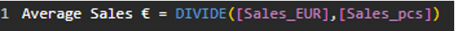
Das Measure “Average Sales €” berechnet hier eine simple Division, wodurch das Ergebnis der Quotient aus „Sales_EUR“ und „Sales_pcs“ ist.Berechnung der absoluten HEK-Änderung (Aktueller Monat-Vormonat)
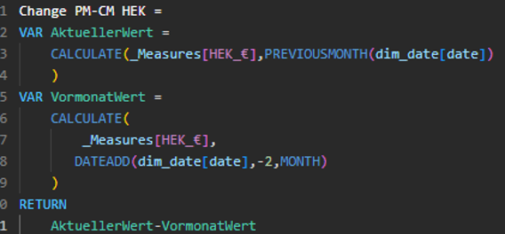
Zu Beginn wird die Variable „AktuellerWert“ definiert und gibt die HEK des Vormonats wieder, wobei man das ganze vom aktuellen Zeitpunkt aus betrachtet. Danach wird „VormonatWert“ als Variable festgelegt, damit der HEK-Wert des Monats vor dem letzten Monat (aktueller Monat minus 2) angezeigt wird. Zum Schluss gibt die eigentliche Rechnung „AktuellerWert-VormonatWert“ lediglich die absolute Änderung wieder. Hinweis: Da wir immer die Änderung des letzten abgeschlossenen Monats mit dem vorangegangenen Monat vergleichen wollen, wird hier die Berechnungslogik einen Monat nach hinten verschoben. Kurz gesagt, aktueller Monat ist hier der letzte abgeschlossene Monat.Berechnung der prozentualen HEK-Änderung (Aktueller Monat-Vormonat)
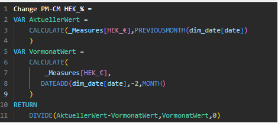
Bei diesem Measure wird dieselbe Logik verwendet, die auch bei der absoluten Änderung genutzt wird. Allerdings wird hier am Ende noch eine einfache prozentuale Änderungsrate berechnet.Berechnung der absoluten HEK-Änderung (Aktuelles Jahr-Vorheriges Jahr)
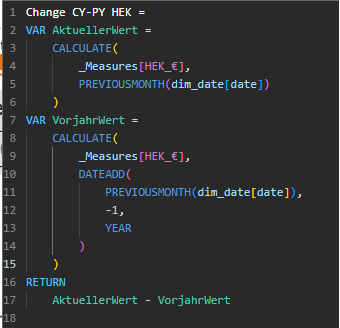
Vom Grundaufbau des Measures wird hier eine sehr ähnliche Methode wie eben verwendet. Der entscheidende Unterschied liegt darin, dass die Variable „VorjahrWert“ vom vorherigen Monat nochmal ein ganzes Jahr zurückgeht und dann diesen Wert wiedergibt. Es wird also die Abweichung der HEK des letzten abgeschlossenen Monats zum selben Vorjahresmonat berechnetBerechnung der prozentualen HEK-Änderung (Aktuelles Jahr-Vorheriges Jahr)
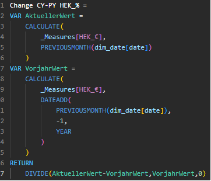
Erneut wird hier lediglich die Funktion „Return“ in eine andere Rechnungslogik für prozentuale Änderungen umgewandelt wie oben schon beschrieben.Relevante Filter
Damit der Bericht die angeforderten Daten wiedergibt sind verschiedene Filterungen von großer Bedeutung für die Validität.Filterung für alle Seiten:
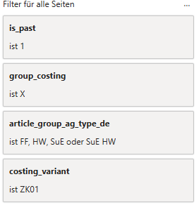
Der „is_past“ Filter sorgt dafür, dass lediglich Daten aus vergangenen Perdioden gezeigt werden. „group_costing ist X“ stellt sicher, dass ausschließlich das Werk berücksichtigt wird, in dem das Produkt produziert wurde. Da uns nur Handelswaren und fertige Produkte interessieren wird außerdem bei article_group_type auf FF und HW gefiltert. Zu Guter Letzt wird mit dem Filter „costing_variant“ auf die gewünschte Kalkulationsvariante ZK01 gefiltert, die von den zustädigen SAP-Kollegen genutzt wirdFilterung für Linien/Säulen-Diagramm:
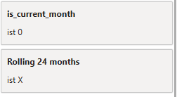
Durch die Bedingung „is_current_month ist 0“ wird der aktuelle Monat aus dem Visual ausgeblendet, da wir nur abgeschlossene Monate haben wollenVisualisierung
Da der Bericht vertrauliche Daten enthält, werden in diesen Schaubildern ausschließlich fiktive bzw. geschwärzte Inhalte verwendet.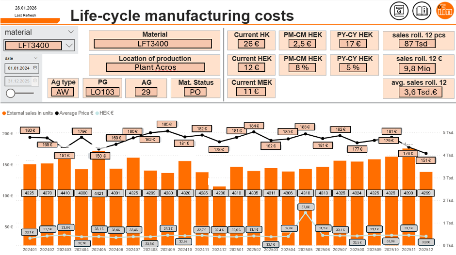
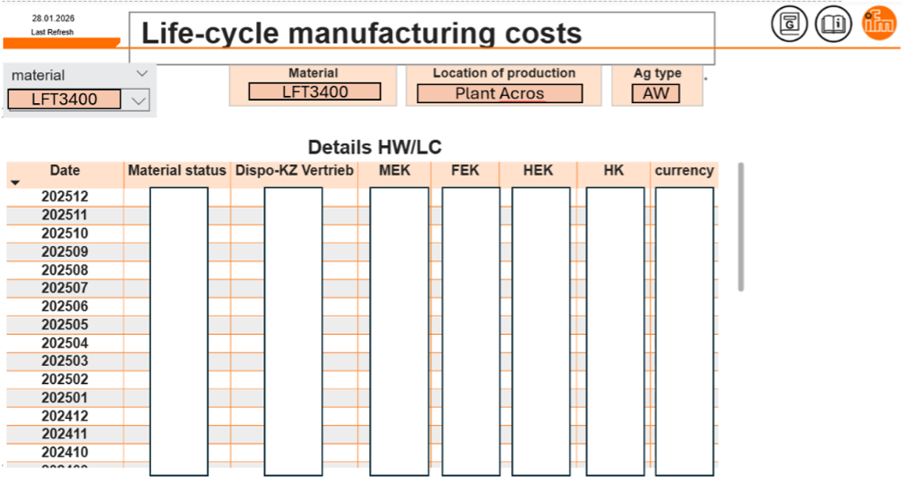
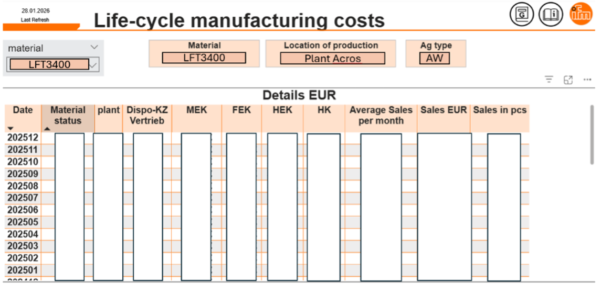
Projekt 2
Internationale Fabrikplanung
Analyse von Verkaufs- und Produktionsdaten in Power BI
Beschreibung
Der Power BI Bericht „Fabrikplanung“ bietet eine übersichtliche Darstellung der verkauften Stückzahlen und deren Verteilung nach Industrie, Absatzland und vorhandenen Zulassungen. Durch gezielte Filtermöglichkeiten nach Material (Produkt), Produktionslinie und Produktgruppe lassen sich relevante Daten flexibel analysieren. Der Bericht unterstützt damit eine fundierte Entscheidungsfindung in der Produktions- und Fabrikplanung. Eine integrierte Heatmap visualisiert wahlweise per Button die Kennzahlen „Sales by Country“ oder „Number of Customers by Country“ und ermöglicht so eine geografische Analyse der Absatz- und Kundenstruktur. Ergänzend zeigt ein Kreisdiagramm die fünf größten Kundenbranchen und verdeutlicht deren Anteil am Gesamtabsatz.Relevante Tabellen und Felder
KPI fct_production_pieces_v • Quantity factor → Anzahl an produzierten Stückzahlen Dim_material_v • Material → Slicer für die Auswahl von bestimmen Endprodukten Prozesse • Core process → beschreibt den Produktionsprozess • Level of competence → Kompetenzlevel des jeweiligen “Core process” • Level of complexity → Komplexitätslevel des jeweiligen • Level of automatation → Automatisierungslevel bzw.Potential Industries • Sales € → Summe an Umsatz in EUR • Customer → Internationaler Kunde aus Basis der Branche (Bsp. Automotive)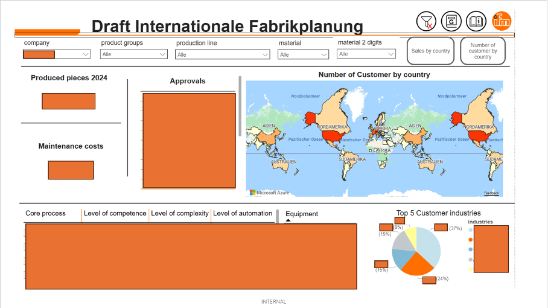